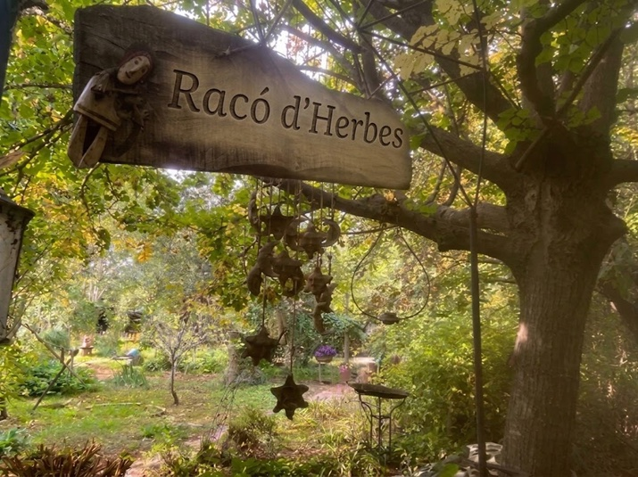
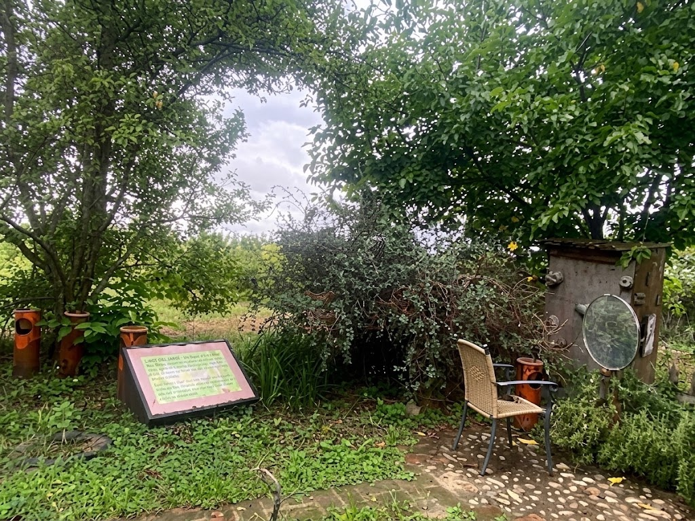

Spacer w głąb siebie

Witaj w tym małym wszechświecie natury, spokoju i odkryć.
Dotarłeś do miejsca, w którym czas może płynąć w innym rytmie. Tu nie trzeba się spieszyć, nigdzie docierać ani robić czegokolwiek w określony sposób.
Prosimy Cię tylko o jedno: bądź tu i teraz.
W całym ogrodzie znajdziesz zakątki, które zapraszają do rozmowy, spaceru, zabawy zapachami, słuchania wody i może odkrycia czegoś nowego o sobie. Niektórymi chwilami warto się dzielić, innymi cieszyć się w ciszy.
Pozwól, by prowadziły Cię zmysły, i niech każde miejsce przemówi do Ciebie na swój sposób. Nie szukaj żadnego rezultatu. Nie ma tu dobrych ani złych odpowiedzi.
Ścieżka zaczyna się tutaj. Resztę odkryjesz sam.
Mapa

Wyruszamy w podróż przez ogród, wokół jego środka, ścieżkami, które prowadzą od wspólnego doświadczenia do osobistego odkrycia.
Cztery zakątki, cztery sposoby, by połączyć się z naturą i z samym sobą.
- Zakątek 1: zakątek słów i refleksji.
- Zakątek 2: ścieżka wody.
- Zakątek 3: gra zapachów.
- Zakątek 4: przemiana.
Idź trasą bez pośpiechu: zatrzymaj się, oddychaj, patrz, daj się zaskoczyć.
Pachnące łuki przeprowadzą Cię z jednego miejsca do drugiego. Wzdłuż ścieżek znajdziesz też inne miejsca, by usiąść, pośpiewać, poczytać, pozachwycać się albo po prostu popatrzeć.
Zakątek 1 · Zakątek słów i refleksji

Dzielić się słowami i myślami, zastanawiać się i słuchać innych.
W cieniu lip ogród daje nam miejsce, by się zatrzymać i spotkać.
Może przychodzimy z dni pełnych słów, piętrzących się myśli albo rozmów, które ciągle odkładamy. Teraz mamy okazję usiąść, odetchnąć i posłuchać.
Wokół Ciebie są krótkie teksty z myślami do przemyślenia. Przeczytaj ten, który przyciągnie Twój wzrok. Pozwól, by słowa w Tobie osiadły.
Jeśli jesteś w grupie, możesz podzielić się tym, co przyszło Ci do głowy podczas lektury. Możesz też słuchać innych, nie musząc odpowiadać. Czasem prawdziwe słuchanie to piękny sposób, by komuś towarzyszyć.
Nie trzeba dochodzić do żadnego wniosku. Wystarczy, że słowo, myśl albo spojrzenie sprawi, że poczujemy się sobie trochę bliżsi.
Zatrzymaj się na chwilę i zapytaj siebie:
Co muszę powiedzieć? I co muszę usłyszeć?
Pozwól, by rozmowa płynęła bez pośpiechu, jak wietrzyk przechodzący przez liście lip.
Zakątek 2 · Ścieżka wody

Cieszyć się wszystkimi pięcioma zmysłami. Iść, czuć swoje ciało i chłonąć ogród.
Pod leszczyną i głożyną ogród otwiera się przed Tobą i zaprasza, by odpuścić.
Poczuj, jak stopy dotykają ziemi, jak porusza się ciało, jak przesuwa się równowaga. Wsłuchaj się w oddech i pozwól mu nadać tempo. Nie ma pośpiechu ani celu, do którego trzeba dojść. Jest tylko przyjemność bycia tu i teraz.
Gdy dojdziesz do końca, usiądź na chwilę: czeka na Ciebie miejsce, by odpocząć i popatrzeć na ogród. Wodospad gra swoją muzykę, a woda daje chłód. Rozejrzyj się, posłuchaj wody i liści głaskanych przez wiatr.
A teraz zapytaj siebie:
Co zmieniło się w Tobie po tym spacerze?
Może wystarczy zamknąć oczy, głęboko odetchnąć i poczuć, że jesteś częścią tej chwili.
Zakątek 3 · Gra zapachów

Obudzić węch, bawić się i odkryć duszę natury w ogrodzie.
Niektóre wspomnienia nie docierają do nas przez oczy ani przez słowa. Czasem wystarczy zapach, by coś w nas się obudziło.
W tym zakątku czeka na Ciebie mała gra w odkrywanie. Weź jeden ze słoiczków, otwórz go i delikatnie zbliż zapach. Wdychaj. Spróbuj zgadnąć, jaka roślina się w nim kryje.
Co podsuwa Ci ten zapach? Czy wydaje się znajomy? Czy przywołuje wspomnienie? Czy budzi ciekawość, spokój, radość albo uczucie, którego nie umiesz do końca nazwać?
Gdy już dokonasz odkrycia, poszukaj tej rośliny w ogrodzie. Przyjrzyj się jej liściom, kształtowi, kolorowi i miejscu, w którym rośnie.
Niech ta gra przypomni Ci, że odkrywanie to także sposób, by nauczyć się patrzeć. Może coś, co wydawało się małe lub nieważne, nagle stanie się wyjątkowym znaleziskiem.
Zapytaj siebie:
Ilu rzeczy wokół siebie jeszcze nie nauczyłem się zauważać?
Podziel się odkryciami z innymi i ciesz się niespodzianką. Tutaj dać się zaskoczyć to też część drogi.
Zakątek 4 · Przemiana

Zatrzymać się, przyjrzeć się sobie i otworzyć na zmianę.
Odkryć w sobie motyla
Dotarłeś do ostatniego zakątka ogrodu. To miejsce jest tylko dla Ciebie.
Zanim usiądziesz, zatrzymaj się przed tekstem, który znajdziesz na ziemi. Przeczytaj go spokojnie i pozwól, by jego słowa zostały z Tobą.
Gąsienica i motyl to ta sama istota, ale nie są w świecie w ten sam sposób. To, co pewnego dnia wydaje się gąsienicy niemożliwe, staje się możliwe, gdy zmienia się w motyla.
A my? Jak często widzimy siebie jako gąsienicę, nie dostrzegając skrzydeł, które dopiero mamy odkryć? Ile zasobów, siły i piękna czeka być może na chwilę, by się w nas obudzić?
Przed lustrem
Teraz usiądź przed lustrem. Spójrz na siebie z czułością, bez oceniania. Jak się dziś czujesz? Jak widzisz siebie w tym momencie życia? Co chciałbyś w sobie przemienić, o co zadbać albo co w sobie pielęgnować?
Gdy będziesz gotów, obracaj lustro, aż znajdziesz zakątek ogrodu, który najbardziej Ci się podoba. Poszukaj widoku, przy którym dobrze się czujesz, i zobacz, jak pojawia się za Tobą.
Spójrz jeszcze raz. Teraz to nie tylko Ty przed lustrem. Jest tam też ogród. Drzewa, rośliny, światło, ziemia… Wszystko jest częścią obrazu, a Ty jesteś jeszcze jedną jego częścią.
Co zmieniło się w tym, jak siebie widzisz?
Może zanim usiadłeś, czułeś się sam ze sobą. Teraz natomiast możesz odkryć, że jesteś częścią większej całości, połączoną z życiem wokół Ciebie.
Daj sobie kilka chwil, by to poczuć. Nie potrzeba natychmiastowych odpowiedzi. Niektóre odkrycia potrzebują ciszy, czasu i zaufania.
Może przemiana nie oznacza stania się kimś innym, lecz odkrycie wszystkiego, co już w nas żyje i czemu jeszcze nie pozwoliliśmy się rozwinąć.
Wstając, zabierz ze sobą to pytanie:
Kim chcesz się stać? Jakie skrzydła chciałbyś rozpostrzeć?
I pamiętaj: może motyl, którym marzysz być, już cicho w Tobie odpoczywa.
Pachnące łuki

Wzdłuż trasy znajdziesz łuki porośnięte pachnącymi pnączami. Są jak niewidzialne nici łączące cały spacer, zapraszające do uważnego oddechu między jednym doświadczeniem a kolejnym.
Przejdź przez ten łuk powoli. Zostaw na kilka chwil za sobą to, co zajmuje Twoje myśli, i wejdź w nowe miejsce z obudzonymi zmysłami.
Zanim pójdziesz dalej, zatrzymaj się na chwilę. Odetchnij głęboko i pozwól, by zapach roślin dotarł do Ciebie we własnym tempie.
Co budzi w Tobie ten zapach? Może wspomnienie, uczucie albo po prostu przyjemne wrażenie. Nie trzeba szukać odpowiedzi; po prostu czuj.
Nie trzeba rozpoznawać zapachu ani szukać w nim znaczenia. Po prostu go zauważ.
W ten sposób łuki stają się małymi pauzami między doświadczeniami, pogłębiając medytacyjny charakter spaceru.
Inne zakątki
Po drodze odkryłeś cztery zakątki i przeszedłeś przez pachnące łuki, które towarzyszyły Ci swoim zapachem. Ale ogród skrywa jeszcze małe skarby. Wśród jego ścieżek znajdziesz inne miejsca, by się zatrzymać, usiąść, odpocząć, poczytać, pośpiewać albo po prostu pozwolić płynąć czasowi.
Może odkryjesz, że nie trzeba robić nic więcej poza patrzeniem, słuchaniem i oddychaniem… aż poczujesz się częścią tego małego wszechświata, jeszcze jednym elementem wśród drzew, roślin, wody i życia, które tu tętni.
Bo nie jesteś tylko kimś, kto spaceruje po ogrodzie: Ty też jesteś jego częścią.
Czasem chodzenie jest też sposobem, by wrócić do siebie. Nie musisz znaleźć odpowiedzi. Może wystarczy oddychać i czuć, że właśnie teraz jesteś tutaj.
Ścieżka kryje jeszcze wiele niespodzianek: